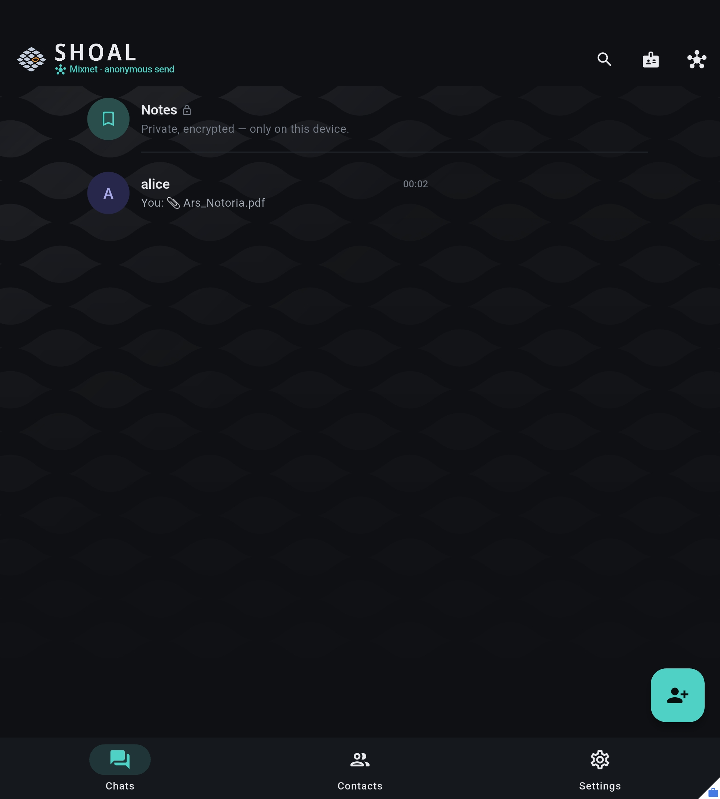
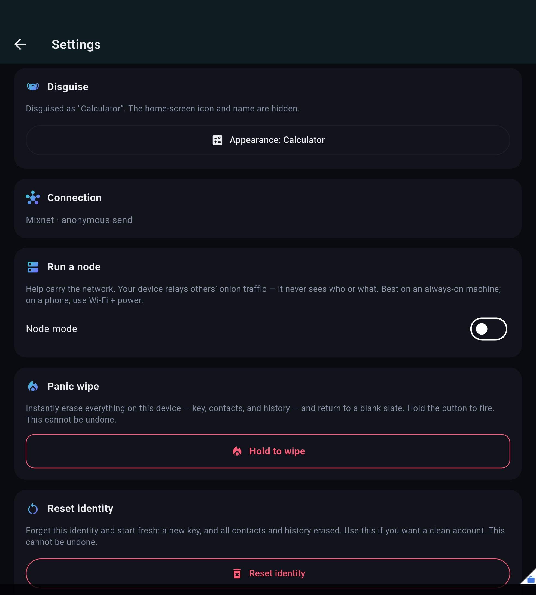
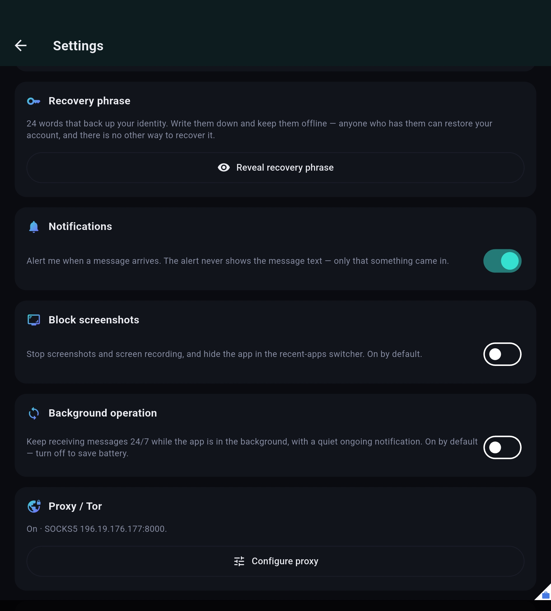
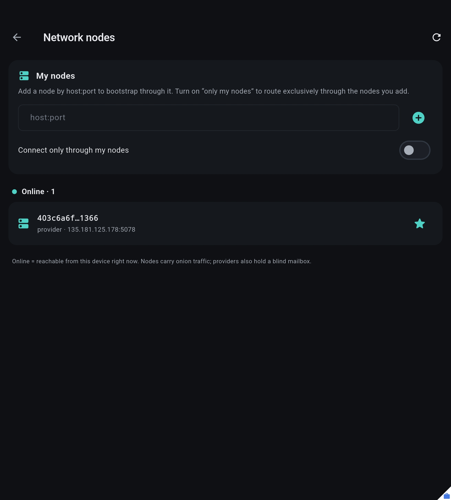

Built on Ciphra · Post-quantum · Anonymous · Zero dependencies
Can't intercept.
Can't read.
Can't link.
Shoal is an anonymous, end-to-end-encrypted messenger. No phone number, no email, no account on anyone's server. The relays that carry your messages cannot read them, and cannot tell who they are between.
Download for Android Read the source
Free and open source, Apache-2.0. Sideloaded APK — not on Google Play.
Five layers, one message
Each layer removes a different thing an observer could learn. None of them is invented here — every construction is a published design, implemented from scratch on a dependency-free cryptographic core.
- recipient anonymity
Identity
Stealth addressing · DH-only
Every message goes to a fresh one-time address derived from the recipient's public key. Two messages to the same person are unlinkable to anyone but that person. The construction is CryptoNote's, the one Monero uses.
- post-quantum key agreement
Handshake
PQXDH · X25519 + ML-KEM-768
The first contact agrees a key over both an elliptic curve and a lattice. An adversary recording traffic today to decrypt it on a future quantum computer gets nothing, because breaking it requires breaking both.
- forward + post-compromise secrecy
Session
Post-quantum Double Ratchet
Keys move forward with every message and re-key from ML-KEM encapsulations as the conversation runs. Stealing today's key does not open yesterday's messages, and the session heals itself afterwards.
- sender anonymity · no plaintext
Delivery
Blind relay + sealed sender
Messages wait in a mailbox on a relay that holds no key to them and is not told who sent them. Run your own relay if you would rather not take that on trust.
- traffic-analysis resistance
Network
Sphinx onion → Loopix mixnet
Packets are fixed-size, layered like an onion, delayed individually and mixed with cover traffic. An observer watching the whole network still cannot draw the line from you to the person you are talking to.
What the cryptography actually is
Named precisely, so it can be checked rather than believed. Every primitive is implemented from its specification with no third-party crates, and tested against the published vectors.
| Purpose | Algorithm | Specification |
|---|---|---|
| Key encapsulation (post-quantum) | ML-KEM-768 | FIPS 203 |
| Signatures (post-quantum) | ML-DSA-65 | FIPS 204 |
| Key agreement (classical) | X25519 | RFC 7748 |
| Authenticated encryption | ChaCha20-Poly1305 | RFC 8439 |
| Key derivation | HKDF-SHA-256 | RFC 5869 |
| Hashing | SHA-2 / SHA-3 | FIPS 180-4 / 202 |
| Onion packet format | Sphinx, LIONESS payload | Danezis–Goldberg |
| Mixing and cover traffic | Loopix | Piotrowska et al. |
The handshake is PQXDH: X25519 and ML-KEM-768 together, so the session key survives either one being broken. This is the same shape of construction Signal deployed for the same reason.
What you get
No phone number, no account
Your identity is a key pair generated on your device. Nothing to verify, nothing to register, nothing to take away.
24-word recovery phrase
Back up the identity and restore it on another device. It is the only copy — nobody can reset it for you.
Duress password
A second password opens an empty decoy account. The real one stays sealed and gives no sign it exists.
Panic wipe
Hold to confirm, from the lock screen or from Settings, and the identity and history are erased.
App disguise
Swap the launcher icon and name for a calculator, a notes app or a weather app.
Disappearing messages
A per-chat timer, synchronised with the other side and pruned on both devices.
Safety numbers
Compare a short code in person or over another channel to rule out a machine-in-the-middle.
Tor and SOCKS5, chainable
Route everything through a proxy, through Tor, or through both in sequence.
Screenshot blocking
Android FLAG_SECURE is on by default, and can be turned off if you would rather it were not.
Run your own nodes
Point the app at infrastructure you control and route exclusively through it.
Biometric unlock
Fingerprint or face over the app password, with the key held in the platform keystore.
Works in the background
A foreground service keeps receiving, so messages arrive while the app is closed.
The app




Updates without a store account
Add the project's F-Droid repository and Shoal updates like any other app on your phone — no Google account, no Play Services, no sideload prompt each time. Every build there is signed with the same key as the APKs on GitHub, so you can move between the two without reinstalling.
Run a node
The network is whoever runs it. A node is a blind mailbox and a mix in one process: it stores sealed envelopes it has no key for and forwards onion packets that reveal only the previous and next hop. One command on any VPS:
curl -fsSL https://raw.githubusercontent.com/monxley/Aegis/main/deploy/install.sh | sudo bashIt builds the binary, creates a service user and starts a systemd unit. Open ports 5077 and 5078. Re-running the same command updates it in place and keeps the node's identity.
Honest limits
Taken from the protocol design's own non-goals. A security claim with no stated boundary is marketing.
No external audit
Shoal is alpha and has not been reviewed by anyone outside the project. Treat every guarantee on this page as a design intention that has not yet been independently checked.
Anonymity needs a crowd
You are hidden among the other people using the network at the same time. While that number is small, so is the protection. This is true of every anonymity system.
A global adversary is not solved
Loopix raises the cost of traffic analysis enormously. A truly global, long-running observer remains the hardest open problem in the field. We claim strong resistance, not impossibility.
Your device is still your device
If someone controls your phone while Shoal is unlocked, the messages are on the screen. No protocol fixes that.
Questions
Do I need a phone number or an email address?
No. Your identity is a key pair generated on your device the first time you open the app. There is no registration step and no account on anyone's server.
What makes it post-quantum?
The handshake agrees a key using both X25519 and ML-KEM-768 (FIPS 203), and the session re-keys from further ML-KEM encapsulations as it runs. An adversary storing traffic now to decrypt later with a quantum computer would have to break the lattice scheme as well as the curve.
Can the servers read my messages?
No. A relay stores sealed envelopes it holds no key for, and is not told who sent them. It also cannot tell which envelopes belong to the same recipient, because every message goes to a fresh one-time address.
How is this different from Signal?
Signal encrypts message content extremely well but requires a phone number and runs on its own servers. Shoal has no phone number and no central identity, and routes traffic through a Sphinx/Loopix mixnet so that who-talks-to-whom is protected too, not only what was said.
Is it on Google Play?
No. The APK is published on GitHub Releases with its SHA-256, and you install it yourself. Every release is signed with the same key — if the certificate fingerprint changes, the APK did not come from this project.
Is it really free?
Yes. Apache-2.0, no accounts, no payments, no telemetry, no advertising. You can read every line and build it yourself.
Which platforms does it run on?
Android today. The core is Rust and the interface is Flutter, so other platforms are possible; only Android is built and tested right now.